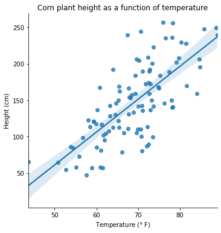
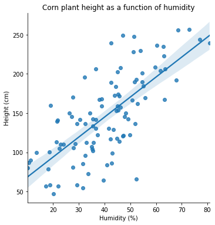
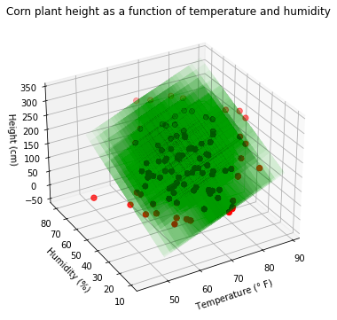
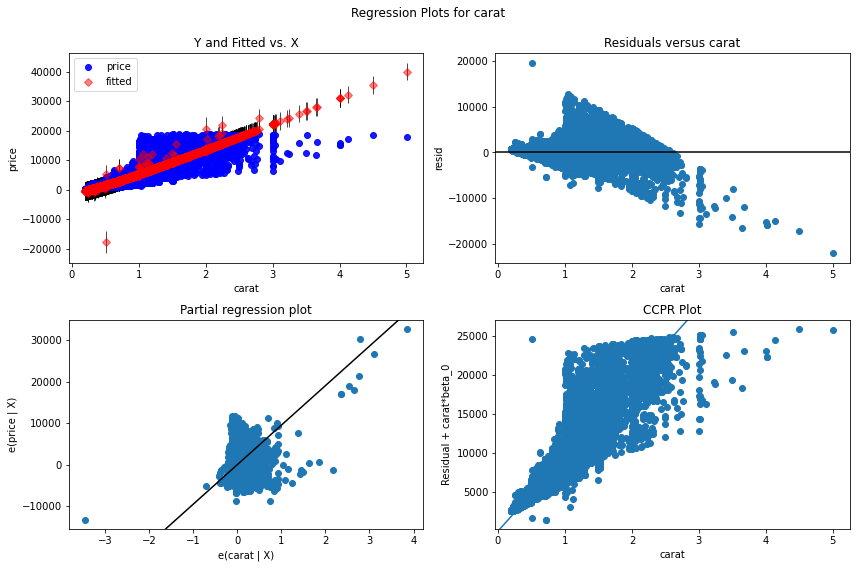
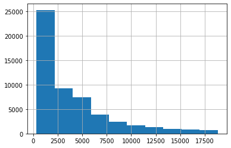
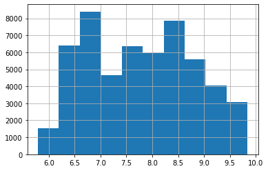
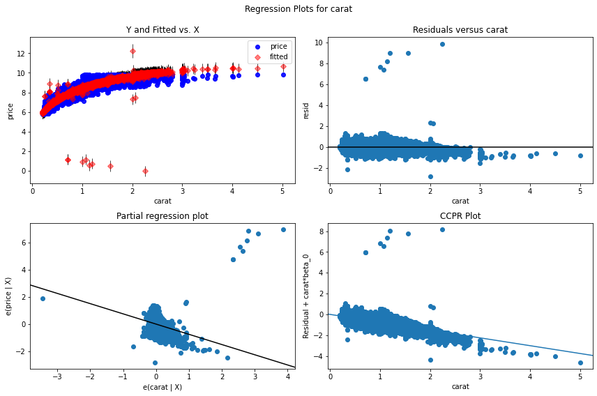

Multiple Linear Regression#
import numpy as np
import pandas as pd
from matplotlib import pyplot as plt
import seaborn as sns
import statsmodels.api as sm
from sklearn.preprocessing import OneHotEncoder, StandardScaler
from sklearn.datasets import make_regression
from sklearn.linear_model import LinearRegression
import sklearn.metrics as metrics
from random import gauss
from mpl_toolkits.mplot3d import Axes3D
from scipy import stats as stats
%matplotlib inline

Agenda#
SWBAT:
conduct linear regressions in
statsmodelsand insklearn;use the one-hot strategy to encode categorical variables.
Regression with Multiple Predictors#
The main idea here is pretty simple. Whereas, in simple linear regression we took our dependent variable to be a function only of a single independent variable, here we’ll be taking the dependent variable to be a function of multiple independent variables.
Our regression equation, then, instead of looking like \(\hat{y} = mx + b\), will now look like:
\(\hat{y} = \hat{\beta}_0 + \hat{\beta}_1x_1 + ... + \hat{\beta}_nx_n\).
Remember that the hats ( \(\hat{}\) ) indicate parameters that are estimated.
Is this still a best-fit line? Well, no. What does the graph of, say, z = x + y look like? Here’s a 3d-plotter. (Of course, once we get x’s with subscripts beyond 2 it’s going to be very hard to visualize. But in practice linear regressions can make use of dozens or even of hundreds of independent variables!)
Is it possible to calculate the betas by hand? Yes, a multiple regression problem still has a closed-form solution:
In a word, for a multiple linear regression problem where \(X\) is the matrix of independent variable values and \(y\) is the vector of dependent variable values, the vector of optimizing regression coefficients \(\vec{b}\) is given by:
\(\vec{b} = (X^TX)^{-1}X^Ty\).
We’ll focus more directly on matrix mathematics later in the course, so don’t worry if this equation is opaque to you. See here for a nice explanation and example.
Confounding Variables#
Suppose I have a simple linear regression that models the growth of corn plants as a function of the temperature of the ambient air. And suppose there is a noticeable positive correlation between temperature and plant height.
corn = pd.read_csv('data/corn.csv',
usecols=['temp', 'humid', 'height'])
sns.lmplot(data=corn, x='temp', y='height')
plt.xlabel('Temperature ($\degree$ F)')
plt.ylabel('Height (cm)')
plt.title('Corn plant height as a function of temperature');

corn.head()
| temp | humid | height | |
|---|---|---|---|
| 0 | 58.086965 | 49.848304 | 122.222368 |
| 1 | 70.582087 | 22.855446 | 110.079666 |
| 2 | 75.868571 | 72.856834 | 256.812528 |
| 3 | 74.732376 | 38.907566 | 167.889601 |
| 4 | 77.384666 | 42.570524 | 188.914312 |
It seems that higher temperatures lead to taller corn plants. But it’s hard to know for sure. One confounding variable might be humidity. If we haven’t controlled for humidity, then it’s difficult to draw conclusions.
One solution is to use both features in a single model.
sns.lmplot(data=corn, x='humid', y='height')
plt.xlabel('Humidity (%)')
plt.ylabel('Height (cm)')
plt.title('Corn plant height as a function of humidity');

ax = plt.figure(figsize=(8, 6)).add_subplot(111, projection='3d')
ax.scatter(corn['temp'], corn['humid'], corn['height'],
depthshade=True, s=40, color='#ff0000')
# create x,y
xx, yy = np.meshgrid(corn['temp'], corn['humid'])
# calculate corresponding z
z = 4.3825 * xx + 2.4693 * yy - 255.5434
# plot the surface
ax.plot_surface(xx, yy, z, alpha=0.01, color='#00ff00')
ax.view_init(30, azim=240)
ax.set_xlabel('Temperature ($\degree$ F)')
ax.set_ylabel('Humidity (%)')
ax.set_zlabel('Height (cm)')
plt.title('Corn plant height as a function of temperature and humidity');

One risk we run when adding more predictors to a model is that their correlations with the target may be nearly collinear with each other. This can make it difficult to determine which predictor is doing the heavy lifting. We shall explore this theme of multicollinearity in more depth in due course.
Dealing with Categorical Variables#
One issue we’d like to resolve is what to do with categorical variables, i.e. variables that represent categories rather than continua. In a Pandas DataFrame, these columns may well have strings or objects for values, but they need not. A certain heart-disease dataset from Kaggle, for example, has a target variable that takes values 0-4, each representing a different stage of heart disease.
Dummying#
One very effective way of dealing with categorical variables is to dummy them out. What this involves is making a new column for each categorical value in the column we’re dummying out.
These new columns will be filled only with 0’s and 1’s, a 1 representing the presence of the relevant categorical value.
Let’s look at a simple example:
comma_use = pd.read_csv('data/comma-survey.csv')
For more on this dataset see here.
comma_use.head()
| RespondentID | In your opinion, which sentence is more gramatically correct? | Prior to reading about it above, had you heard of the serial (or Oxford) comma? | How much, if at all, do you care about the use (or lack thereof) of the serial (or Oxford) comma in grammar? | How would you write the following sentence? | When faced with using the word "data", have you ever spent time considering if the word was a singular or plural noun? | How much, if at all, do you care about the debate over the use of the word "data" as a singluar or plural noun? | In your opinion, how important or unimportant is proper use of grammar? | Gender | Age | Household Income | Education | Location (Census Region) | |
|---|---|---|---|---|---|---|---|---|---|---|---|---|---|
| 0 | 3292953864 | It's important for a person to be honest, kind... | Yes | Some | Some experts say it's important to drink milk,... | No | Not much | Somewhat important | Male | 30-44 | $50,000 - $99,999 | Bachelor degree | South Atlantic |
| 1 | 3292950324 | It's important for a person to be honest, kind... | No | Not much | Some experts say it's important to drink milk,... | No | Not much | Somewhat unimportant | Male | 30-44 | $50,000 - $99,999 | Graduate degree | Mountain |
| 2 | 3292942669 | It's important for a person to be honest, kind... | Yes | Some | Some experts say it's important to drink milk,... | Yes | Not at all | Very important | Male | 30-44 | NaN | NaN | East North Central |
| 3 | 3292932796 | It's important for a person to be honest, kind... | Yes | Some | Some experts say it's important to drink milk,... | No | Some | Somewhat important | Male | 18-29 | NaN | Less than high school degree | Middle Atlantic |
| 4 | 3292932522 | It's important for a person to be honest, kind... | No | Not much | Some experts say it's important to drink milk,... | No | Not much | NaN | NaN | NaN | NaN | NaN | NaN |
comma_use['In your opinion, which sentence is more gramatically correct?'].value_counts()
It's important for a person to be honest, kind, and loyal. 641
It's important for a person to be honest, kind and loyal. 488
Name: In your opinion, which sentence is more gramatically correct?, dtype: int64
comma_use.shape
(1129, 13)
comma_use.isna().sum().sum()
924
comma_use.dropna(inplace=True)
comma_use.shape
(825, 13)
# Let's try using sklearn's OneHotEncoder to create our dummy columns:
ohe = OneHotEncoder(drop='first')
comma_trans = ohe.fit_transform(comma_use.drop('RespondentID', axis=1))
Could we have used pd.get_dummies() instead?
Well, yes. And in fact get_dummies() is in some ways easier; for one thing, it’s built right into Pandas. But there are drawbacks with it as well. The main advantage of the sklearn tool is that it stores information about the columns and creates a persistent function that can be used on future data of the same form. See this page for more.
pd.get_dummies(comma_use.drop('RespondentID', axis=1))
| In your opinion, which sentence is more gramatically correct?_It's important for a person to be honest, kind and loyal. | In your opinion, which sentence is more gramatically correct?_It's important for a person to be honest, kind, and loyal. | Prior to reading about it above, had you heard of the serial (or Oxford) comma?_No | Prior to reading about it above, had you heard of the serial (or Oxford) comma?_Yes | How much, if at all, do you care about the use (or lack thereof) of the serial (or Oxford) comma in grammar?_A lot | How much, if at all, do you care about the use (or lack thereof) of the serial (or Oxford) comma in grammar?_Not at all | How much, if at all, do you care about the use (or lack thereof) of the serial (or Oxford) comma in grammar?_Not much | How much, if at all, do you care about the use (or lack thereof) of the serial (or Oxford) comma in grammar?_Some | How would you write the following sentence?_Some experts say it's important to drink milk, but the data are inconclusive. | How would you write the following sentence?_Some experts say it's important to drink milk, but the data is inconclusive. | ... | Education_Some college or Associate degree | Location (Census Region)_East North Central | Location (Census Region)_East South Central | Location (Census Region)_Middle Atlantic | Location (Census Region)_Mountain | Location (Census Region)_New England | Location (Census Region)_Pacific | Location (Census Region)_South Atlantic | Location (Census Region)_West North Central | Location (Census Region)_West South Central | |
|---|---|---|---|---|---|---|---|---|---|---|---|---|---|---|---|---|---|---|---|---|---|
| 0 | 1 | 0 | 0 | 1 | 0 | 0 | 0 | 1 | 0 | 1 | ... | 0 | 0 | 0 | 0 | 0 | 0 | 0 | 1 | 0 | 0 |
| 1 | 0 | 1 | 1 | 0 | 0 | 0 | 1 | 0 | 0 | 1 | ... | 0 | 0 | 0 | 0 | 1 | 0 | 0 | 0 | 0 | 0 |
| 5 | 0 | 1 | 1 | 0 | 1 | 0 | 0 | 0 | 1 | 0 | ... | 1 | 0 | 0 | 0 | 0 | 1 | 0 | 0 | 0 | 0 |
| 6 | 0 | 1 | 0 | 1 | 1 | 0 | 0 | 0 | 0 | 1 | ... | 1 | 0 | 0 | 0 | 0 | 0 | 1 | 0 | 0 | 0 |
| 7 | 0 | 1 | 0 | 1 | 1 | 0 | 0 | 0 | 1 | 0 | ... | 1 | 1 | 0 | 0 | 0 | 0 | 0 | 0 | 0 | 0 |
| ... | ... | ... | ... | ... | ... | ... | ... | ... | ... | ... | ... | ... | ... | ... | ... | ... | ... | ... | ... | ... | ... |
| 1124 | 0 | 1 | 0 | 1 | 1 | 0 | 0 | 0 | 0 | 1 | ... | 1 | 0 | 0 | 0 | 0 | 0 | 0 | 1 | 0 | 0 |
| 1125 | 1 | 0 | 1 | 0 | 0 | 0 | 0 | 1 | 0 | 1 | ... | 1 | 0 | 0 | 0 | 0 | 0 | 1 | 0 | 0 | 0 |
| 1126 | 0 | 1 | 0 | 1 | 0 | 0 | 0 | 1 | 0 | 1 | ... | 0 | 0 | 0 | 1 | 0 | 0 | 0 | 0 | 0 | 0 |
| 1127 | 1 | 0 | 0 | 1 | 1 | 0 | 0 | 0 | 0 | 1 | ... | 0 | 0 | 1 | 0 | 0 | 0 | 0 | 0 | 0 | 0 |
| 1128 | 1 | 0 | 0 | 1 | 1 | 0 | 0 | 0 | 0 | 1 | ... | 0 | 0 | 0 | 0 | 1 | 0 | 0 | 0 | 0 | 0 |
825 rows × 46 columns
So what did the encoder do?
comma_trans
<825x34 sparse matrix of type '<class 'numpy.float64'>'
with 7174 stored elements in Compressed Sparse Row format>
comma_trans.todense()
matrix([[0., 1., 0., ..., 1., 0., 0.],
[1., 0., 0., ..., 0., 0., 0.],
[1., 0., 0., ..., 0., 0., 0.],
...,
[1., 1., 0., ..., 0., 0., 0.],
[0., 1., 0., ..., 0., 0., 0.],
[0., 1., 0., ..., 0., 0., 0.]])
ohe.get_feature_names()
array(["x0_It's important for a person to be honest, kind, and loyal.",
'x1_Yes', 'x2_Not at all', 'x2_Not much', 'x2_Some',
"x3_Some experts say it's important to drink milk, but the data is inconclusive.",
'x4_Yes', 'x5_Not at all', 'x5_Not much', 'x5_Some',
'x6_Somewhat important', 'x6_Somewhat unimportant',
'x6_Very important', 'x6_Very unimportant', 'x7_Male', 'x8_30-44',
'x8_45-60', 'x8_> 60', 'x9_$100,000 - $149,999', 'x9_$150,000+',
'x9_$25,000 - $49,999', 'x9_$50,000 - $99,999',
'x10_Graduate degree', 'x10_High school degree',
'x10_Less than high school degree',
'x10_Some college or Associate degree', 'x11_East South Central',
'x11_Middle Atlantic', 'x11_Mountain', 'x11_New England',
'x11_Pacific', 'x11_South Atlantic', 'x11_West North Central',
'x11_West South Central'], dtype=object)
comma_df = pd.DataFrame(comma_trans.todense(), columns=ohe.get_feature_names())
comma_df.head()
| x0_It's important for a person to be honest, kind, and loyal. | x1_Yes | x2_Not at all | x2_Not much | x2_Some | x3_Some experts say it's important to drink milk, but the data is inconclusive. | x4_Yes | x5_Not at all | x5_Not much | x5_Some | ... | x10_Less than high school degree | x10_Some college or Associate degree | x11_East South Central | x11_Middle Atlantic | x11_Mountain | x11_New England | x11_Pacific | x11_South Atlantic | x11_West North Central | x11_West South Central | |
|---|---|---|---|---|---|---|---|---|---|---|---|---|---|---|---|---|---|---|---|---|---|
| 0 | 0.0 | 1.0 | 0.0 | 0.0 | 1.0 | 1.0 | 0.0 | 0.0 | 1.0 | 0.0 | ... | 0.0 | 0.0 | 0.0 | 0.0 | 0.0 | 0.0 | 0.0 | 1.0 | 0.0 | 0.0 |
| 1 | 1.0 | 0.0 | 0.0 | 1.0 | 0.0 | 1.0 | 0.0 | 0.0 | 1.0 | 0.0 | ... | 0.0 | 0.0 | 0.0 | 0.0 | 1.0 | 0.0 | 0.0 | 0.0 | 0.0 | 0.0 |
| 2 | 1.0 | 0.0 | 0.0 | 0.0 | 0.0 | 0.0 | 1.0 | 0.0 | 0.0 | 1.0 | ... | 0.0 | 1.0 | 0.0 | 0.0 | 0.0 | 1.0 | 0.0 | 0.0 | 0.0 | 0.0 |
| 3 | 1.0 | 1.0 | 0.0 | 0.0 | 0.0 | 1.0 | 1.0 | 0.0 | 0.0 | 1.0 | ... | 0.0 | 1.0 | 0.0 | 0.0 | 0.0 | 0.0 | 1.0 | 0.0 | 0.0 | 0.0 |
| 4 | 1.0 | 1.0 | 0.0 | 0.0 | 0.0 | 0.0 | 0.0 | 0.0 | 0.0 | 0.0 | ... | 0.0 | 1.0 | 0.0 | 0.0 | 0.0 | 0.0 | 0.0 | 0.0 | 0.0 | 0.0 |
5 rows × 34 columns
Multiple Regression in statsmodels#
Let’s build a multiple regression with statsmodels. Let’s start with a toy model:
centers = np.arange(1, 6)
preds = np.array([stats.norm(loc=center, scale=3).rvs(200) for center in centers]).T
preds_df = pd.DataFrame(preds, columns=[f'var{center}' for center in centers])
target = preds_df['var1'] + 2*preds_df['var2'] + 3*preds_df['var3']\
+ 4*preds_df['var4'] + 5*preds_df['var5']
target_df = pd.DataFrame(target, columns=['target'])
df = pd.concat([preds_df, target_df], axis=1)
df.head()
| var1 | var2 | var3 | var4 | var5 | target | |
|---|---|---|---|---|---|---|
| 0 | 4.370539 | 1.860799 | 6.910419 | 6.930321 | -1.274850 | 50.170425 |
| 1 | 1.958793 | 3.711761 | 3.209436 | -1.915778 | 2.070367 | 21.699344 |
| 2 | -1.131153 | 1.444110 | 5.881965 | 3.598023 | -1.247996 | 27.555072 |
| 3 | -0.064700 | -0.753187 | 2.760350 | -1.334131 | 2.059206 | 11.669481 |
| 4 | -0.746462 | 2.975584 | 3.502414 | 5.817913 | 5.063123 | 64.299212 |
X = df.drop('target', axis=1)
y = df['target']
model = sm.OLS(endog=y, exog=X).fit()
model.summary()
| Dep. Variable: | target | R-squared (uncentered): | 1.000 |
|---|---|---|---|
| Model: | OLS | Adj. R-squared (uncentered): | 1.000 |
| Method: | Least Squares | F-statistic: | 9.545e+32 |
| Date: | Thu, 08 Apr 2021 | Prob (F-statistic): | 0.00 |
| Time: | 13:10:51 | Log-Likelihood: | 6132.2 |
| No. Observations: | 200 | AIC: | -1.225e+04 |
| Df Residuals: | 195 | BIC: | -1.224e+04 |
| Df Model: | 5 | ||
| Covariance Type: | nonrobust |
| coef | std err | t | P>|t| | [0.025 | 0.975] | |
|---|---|---|---|---|---|---|
| var1 | 1.0000 | 2.76e-16 | 3.62e+15 | 0.000 | 1.000 | 1.000 |
| var2 | 2.0000 | 2.49e-16 | 8.03e+15 | 0.000 | 2.000 | 2.000 |
| var3 | 3.0000 | 2.46e-16 | 1.22e+16 | 0.000 | 3.000 | 3.000 |
| var4 | 4.0000 | 2.55e-16 | 1.57e+16 | 0.000 | 4.000 | 4.000 |
| var5 | 5.0000 | 2.15e-16 | 2.33e+16 | 0.000 | 5.000 | 5.000 |
| Omnibus: | 1.257 | Durbin-Watson: | 1.671 |
|---|---|---|---|
| Prob(Omnibus): | 0.533 | Jarque-Bera (JB): | 1.358 |
| Skew: | 0.169 | Prob(JB): | 0.507 |
| Kurtosis: | 2.779 | Cond. No. | 2.78 |
Notes:
[1] R² is computed without centering (uncentered) since the model does not contain a constant.
[2] Standard Errors assume that the covariance matrix of the errors is correctly specified.
Diamonds Dataset#
data = sns.load_dataset('diamonds').drop(['cut', 'color', 'clarity'], axis = 1)
data.head()
| carat | depth | table | price | x | y | z | |
|---|---|---|---|---|---|---|---|
| 0 | 0.23 | 61.5 | 55.0 | 326 | 3.95 | 3.98 | 2.43 |
| 1 | 0.21 | 59.8 | 61.0 | 326 | 3.89 | 3.84 | 2.31 |
| 2 | 0.23 | 56.9 | 65.0 | 327 | 4.05 | 4.07 | 2.31 |
| 3 | 0.29 | 62.4 | 58.0 | 334 | 4.20 | 4.23 | 2.63 |
| 4 | 0.31 | 63.3 | 58.0 | 335 | 4.34 | 4.35 | 2.75 |
X, y = data.drop('price', axis=1), data['price']
model2 = sm.OLS(y, X).fit()
model2.summary()
| Dep. Variable: | price | R-squared (uncentered): | 0.926 |
|---|---|---|---|
| Model: | OLS | Adj. R-squared (uncentered): | 0.926 |
| Method: | Least Squares | F-statistic: | 1.120e+05 |
| Date: | Thu, 08 Apr 2021 | Prob (F-statistic): | 0.00 |
| Time: | 13:10:53 | Log-Likelihood: | -4.7196e+05 |
| No. Observations: | 53940 | AIC: | 9.439e+05 |
| Df Residuals: | 53934 | BIC: | 9.440e+05 |
| Df Model: | 6 | ||
| Covariance Type: | nonrobust |
| coef | std err | t | P>|t| | [0.025 | 0.975] | |
|---|---|---|---|---|---|---|
| carat | 9533.9516 | 59.317 | 160.730 | 0.000 | 9417.691 | 9650.213 |
| depth | 28.2911 | 2.416 | 11.712 | 0.000 | 23.556 | 33.026 |
| table | -18.8220 | 2.558 | -7.358 | 0.000 | -23.836 | -13.808 |
| x | -522.6300 | 40.351 | -12.952 | 0.000 | -601.718 | -443.542 |
| y | 182.3295 | 25.907 | 7.038 | 0.000 | 131.552 | 233.107 |
| z | -676.7502 | 42.361 | -15.976 | 0.000 | -759.778 | -593.722 |
| Omnibus: | 14555.339 | Durbin-Watson: | 1.147 |
|---|---|---|---|
| Prob(Omnibus): | 0.000 | Jarque-Bera (JB): | 287131.956 |
| Skew: | 0.809 | Prob(JB): | 0.00 |
| Kurtosis: | 14.186 | Cond. No. | 829. |
Notes:
[1] R² is computed without centering (uncentered) since the model does not contain a constant.
[2] Standard Errors assume that the covariance matrix of the errors is correctly specified.
sm.graphics.plot_regress_exog(model2, 'carat', fig=plt.figure(figsize=(12, 8)));

Check distribution of target#
y.hist();

y_scld = np.log(y)
y_scld.hist();

Build model with log-scaled target#
model3 = sm.OLS(y_scld, X).fit()
model3.summary()
| Dep. Variable: | price | R-squared (uncentered): | 0.999 |
|---|---|---|---|
| Model: | OLS | Adj. R-squared (uncentered): | 0.999 |
| Method: | Least Squares | F-statistic: | 7.072e+06 |
| Date: | Thu, 08 Apr 2021 | Prob (F-statistic): | 0.00 |
| Time: | 13:10:56 | Log-Likelihood: | -7833.4 |
| No. Observations: | 53940 | AIC: | 1.568e+04 |
| Df Residuals: | 53934 | BIC: | 1.573e+04 |
| Df Model: | 6 | ||
| Covariance Type: | nonrobust |
| coef | std err | t | P>|t| | [0.025 | 0.975] | |
|---|---|---|---|---|---|---|
| carat | -0.7522 | 0.011 | -69.197 | 0.000 | -0.774 | -0.731 |
| depth | 0.0319 | 0.000 | 72.131 | 0.000 | 0.031 | 0.033 |
| table | -0.0062 | 0.000 | -13.212 | 0.000 | -0.007 | -0.005 |
| x | 1.1098 | 0.007 | 150.072 | 0.000 | 1.095 | 1.124 |
| y | 0.0506 | 0.005 | 10.660 | 0.000 | 0.041 | 0.060 |
| z | 0.0340 | 0.008 | 4.377 | 0.000 | 0.019 | 0.049 |
| Omnibus: | 50951.621 | Durbin-Watson: | 1.363 |
|---|---|---|---|
| Prob(Omnibus): | 0.000 | Jarque-Bera (JB): | 28055158.482 |
| Skew: | 3.704 | Prob(JB): | 0.00 |
| Kurtosis: | 114.481 | Cond. No. | 829. |
Notes:
[1] R² is computed without centering (uncentered) since the model does not contain a constant.
[2] Standard Errors assume that the covariance matrix of the errors is correctly specified.
sm.graphics.plot_regress_exog(model3, 'carat', fig=plt.figure(figsize=(12, 8)));

Remember that \(R^2\) can be negative!
bad_pred = np.mean(y) * np.ones(len(y))
worse_pred = (np.mean(y) + 1000) * np.ones(len(y))
print(metrics.r2_score(y, bad_pred))
print(metrics.r2_score(y, worse_pred))
0.0
-0.06283248452205892
Putting it in Practice: Wine Dataset 🍷#
This dataset includes measurable attributes of different wines as well as their rated quality.
Imagine we want to attempt to estimate the perceived quality of a wine using these attributes.
wine = pd.read_csv('data/wine.csv')
wine.head()
| fixed acidity | volatile acidity | citric acid | residual sugar | chlorides | free sulfur dioxide | total sulfur dioxide | density | pH | sulphates | alcohol | quality | red_wine | |
|---|---|---|---|---|---|---|---|---|---|---|---|---|---|
| 0 | 7.4 | 0.70 | 0.00 | 1.9 | 0.076 | 11.0 | 34.0 | 0.9978 | 3.51 | 0.56 | 9.4 | 5 | 1 |
| 1 | 7.8 | 0.88 | 0.00 | 2.6 | 0.098 | 25.0 | 67.0 | 0.9968 | 3.20 | 0.68 | 9.8 | 5 | 1 |
| 2 | 7.8 | 0.76 | 0.04 | 2.3 | 0.092 | 15.0 | 54.0 | 0.9970 | 3.26 | 0.65 | 9.8 | 5 | 1 |
| 3 | 11.2 | 0.28 | 0.56 | 1.9 | 0.075 | 17.0 | 60.0 | 0.9980 | 3.16 | 0.58 | 9.8 | 6 | 1 |
| 4 | 7.4 | 0.70 | 0.00 | 1.9 | 0.076 | 11.0 | 34.0 | 0.9978 | 3.51 | 0.56 | 9.4 | 5 | 1 |
wine['quality'].value_counts()
6 2836
5 2138
7 1079
4 216
8 193
3 30
9 5
Name: quality, dtype: int64
wine['red_wine'].value_counts()
0 4898
1 1599
Name: red_wine, dtype: int64
wine.info()
<class 'pandas.core.frame.DataFrame'>
RangeIndex: 6497 entries, 0 to 6496
Data columns (total 13 columns):
# Column Non-Null Count Dtype
--- ------ -------------- -----
0 fixed acidity 6497 non-null float64
1 volatile acidity 6497 non-null float64
2 citric acid 6497 non-null float64
3 residual sugar 6497 non-null float64
4 chlorides 6497 non-null float64
5 free sulfur dioxide 6497 non-null float64
6 total sulfur dioxide 6497 non-null float64
7 density 6497 non-null float64
8 pH 6497 non-null float64
9 sulphates 6497 non-null float64
10 alcohol 6497 non-null float64
11 quality 6497 non-null int64
12 red_wine 6497 non-null int64
dtypes: float64(11), int64(2)
memory usage: 660.0 KB
wine.describe()
| fixed acidity | volatile acidity | citric acid | residual sugar | chlorides | free sulfur dioxide | total sulfur dioxide | density | pH | sulphates | alcohol | quality | red_wine | |
|---|---|---|---|---|---|---|---|---|---|---|---|---|---|
| count | 6497.000000 | 6497.000000 | 6497.000000 | 6497.000000 | 6497.000000 | 6497.000000 | 6497.000000 | 6497.000000 | 6497.000000 | 6497.000000 | 6497.000000 | 6497.000000 | 6497.000000 |
| mean | 7.215307 | 0.339666 | 0.318633 | 5.443235 | 0.056034 | 30.525319 | 115.744574 | 0.994697 | 3.218501 | 0.531268 | 10.491801 | 5.818378 | 0.246114 |
| std | 1.296434 | 0.164636 | 0.145318 | 4.757804 | 0.035034 | 17.749400 | 56.521855 | 0.002999 | 0.160787 | 0.148806 | 1.192712 | 0.873255 | 0.430779 |
| min | 3.800000 | 0.080000 | 0.000000 | 0.600000 | 0.009000 | 1.000000 | 6.000000 | 0.987110 | 2.720000 | 0.220000 | 8.000000 | 3.000000 | 0.000000 |
| 25% | 6.400000 | 0.230000 | 0.250000 | 1.800000 | 0.038000 | 17.000000 | 77.000000 | 0.992340 | 3.110000 | 0.430000 | 9.500000 | 5.000000 | 0.000000 |
| 50% | 7.000000 | 0.290000 | 0.310000 | 3.000000 | 0.047000 | 29.000000 | 118.000000 | 0.994890 | 3.210000 | 0.510000 | 10.300000 | 6.000000 | 0.000000 |
| 75% | 7.700000 | 0.400000 | 0.390000 | 8.100000 | 0.065000 | 41.000000 | 156.000000 | 0.996990 | 3.320000 | 0.600000 | 11.300000 | 6.000000 | 0.000000 |
| max | 15.900000 | 1.580000 | 1.660000 | 65.800000 | 0.611000 | 289.000000 | 440.000000 | 1.038980 | 4.010000 | 2.000000 | 14.900000 | 9.000000 | 1.000000 |
Running the Regression#
First, we’ll separate the data into our predictors (X) and target (y)
wine_preds = wine.drop('quality', axis=1)
wine_target = wine['quality']
wine_preds.head()
| fixed acidity | volatile acidity | citric acid | residual sugar | chlorides | free sulfur dioxide | total sulfur dioxide | density | pH | sulphates | alcohol | red_wine | |
|---|---|---|---|---|---|---|---|---|---|---|---|---|
| 0 | 7.4 | 0.70 | 0.00 | 1.9 | 0.076 | 11.0 | 34.0 | 0.9978 | 3.51 | 0.56 | 9.4 | 1 |
| 1 | 7.8 | 0.88 | 0.00 | 2.6 | 0.098 | 25.0 | 67.0 | 0.9968 | 3.20 | 0.68 | 9.8 | 1 |
| 2 | 7.8 | 0.76 | 0.04 | 2.3 | 0.092 | 15.0 | 54.0 | 0.9970 | 3.26 | 0.65 | 9.8 | 1 |
| 3 | 11.2 | 0.28 | 0.56 | 1.9 | 0.075 | 17.0 | 60.0 | 0.9980 | 3.16 | 0.58 | 9.8 | 1 |
| 4 | 7.4 | 0.70 | 0.00 | 1.9 | 0.076 | 11.0 | 34.0 | 0.9978 | 3.51 | 0.56 | 9.4 | 1 |
Now we can perform our (multiple) linear regression! Since we already used statsmodels, let’s use that again to fit the model and then check the summary:
# use sm.add_constant() to add constant term/y-intercept
predictors = sm.add_constant(wine_preds)
predictors
| const | fixed acidity | volatile acidity | citric acid | residual sugar | chlorides | free sulfur dioxide | total sulfur dioxide | density | pH | sulphates | alcohol | red_wine | |
|---|---|---|---|---|---|---|---|---|---|---|---|---|---|
| 0 | 1.0 | 7.4 | 0.70 | 0.00 | 1.9 | 0.076 | 11.0 | 34.0 | 0.99780 | 3.51 | 0.56 | 9.4 | 1 |
| 1 | 1.0 | 7.8 | 0.88 | 0.00 | 2.6 | 0.098 | 25.0 | 67.0 | 0.99680 | 3.20 | 0.68 | 9.8 | 1 |
| 2 | 1.0 | 7.8 | 0.76 | 0.04 | 2.3 | 0.092 | 15.0 | 54.0 | 0.99700 | 3.26 | 0.65 | 9.8 | 1 |
| 3 | 1.0 | 11.2 | 0.28 | 0.56 | 1.9 | 0.075 | 17.0 | 60.0 | 0.99800 | 3.16 | 0.58 | 9.8 | 1 |
| 4 | 1.0 | 7.4 | 0.70 | 0.00 | 1.9 | 0.076 | 11.0 | 34.0 | 0.99780 | 3.51 | 0.56 | 9.4 | 1 |
| ... | ... | ... | ... | ... | ... | ... | ... | ... | ... | ... | ... | ... | ... |
| 6492 | 1.0 | 6.2 | 0.21 | 0.29 | 1.6 | 0.039 | 24.0 | 92.0 | 0.99114 | 3.27 | 0.50 | 11.2 | 0 |
| 6493 | 1.0 | 6.6 | 0.32 | 0.36 | 8.0 | 0.047 | 57.0 | 168.0 | 0.99490 | 3.15 | 0.46 | 9.6 | 0 |
| 6494 | 1.0 | 6.5 | 0.24 | 0.19 | 1.2 | 0.041 | 30.0 | 111.0 | 0.99254 | 2.99 | 0.46 | 9.4 | 0 |
| 6495 | 1.0 | 5.5 | 0.29 | 0.30 | 1.1 | 0.022 | 20.0 | 110.0 | 0.98869 | 3.34 | 0.38 | 12.8 | 0 |
| 6496 | 1.0 | 6.0 | 0.21 | 0.38 | 0.8 | 0.020 | 22.0 | 98.0 | 0.98941 | 3.26 | 0.32 | 11.8 | 0 |
6497 rows × 13 columns
model = sm.OLS(wine_target, predictors).fit()
model.summary()
| Dep. Variable: | quality | R-squared: | 0.297 |
|---|---|---|---|
| Model: | OLS | Adj. R-squared: | 0.295 |
| Method: | Least Squares | F-statistic: | 227.8 |
| Date: | Thu, 08 Apr 2021 | Prob (F-statistic): | 0.00 |
| Time: | 13:10:59 | Log-Likelihood: | -7195.2 |
| No. Observations: | 6497 | AIC: | 1.442e+04 |
| Df Residuals: | 6484 | BIC: | 1.450e+04 |
| Df Model: | 12 | ||
| Covariance Type: | nonrobust |
| coef | std err | t | P>|t| | [0.025 | 0.975] | |
|---|---|---|---|---|---|---|
| const | 104.3904 | 14.105 | 7.401 | 0.000 | 76.741 | 132.040 |
| fixed acidity | 0.0851 | 0.016 | 5.396 | 0.000 | 0.054 | 0.116 |
| volatile acidity | -1.4924 | 0.081 | -18.345 | 0.000 | -1.652 | -1.333 |
| citric acid | -0.0626 | 0.080 | -0.786 | 0.432 | -0.219 | 0.094 |
| residual sugar | 0.0624 | 0.006 | 10.522 | 0.000 | 0.051 | 0.074 |
| chlorides | -0.7573 | 0.334 | -2.264 | 0.024 | -1.413 | -0.102 |
| free sulfur dioxide | 0.0049 | 0.001 | 6.443 | 0.000 | 0.003 | 0.006 |
| total sulfur dioxide | -0.0014 | 0.000 | -4.333 | 0.000 | -0.002 | -0.001 |
| density | -103.9096 | 14.336 | -7.248 | 0.000 | -132.013 | -75.806 |
| pH | 0.4988 | 0.091 | 5.506 | 0.000 | 0.321 | 0.676 |
| sulphates | 0.7217 | 0.076 | 9.466 | 0.000 | 0.572 | 0.871 |
| alcohol | 0.2227 | 0.018 | 12.320 | 0.000 | 0.187 | 0.258 |
| red_wine | 0.3613 | 0.057 | 6.367 | 0.000 | 0.250 | 0.473 |
| Omnibus: | 140.992 | Durbin-Watson: | 1.648 |
|---|---|---|---|
| Prob(Omnibus): | 0.000 | Jarque-Bera (JB): | 313.985 |
| Skew: | 0.016 | Prob(JB): | 6.59e-69 |
| Kurtosis: | 4.077 | Cond. No. | 2.96e+05 |
Notes:
[1] Standard Errors assume that the covariance matrix of the errors is correctly specified.
[2] The condition number is large, 2.96e+05. This might indicate that there are
strong multicollinearity or other numerical problems.
Scaling#
Before we construct a linear regression, let’s scale our columns as z-scores. Why?
In a word, it’s useful to have all of our variables be on the same scale, so that the resulting coefficients are easier to interpret. If the scales of the variables are very different one from another, then some of the coefficients may end up on very large or very tiny scales.
For more on this, see this post.
Let’s try a model with our wine dataset now.
# We'll include all the columns for now.
wine_preds_scaled = (wine_preds - np.mean(wine_preds)) / np.std(wine_preds)
wine_preds_scaled.describe()
| fixed acidity | volatile acidity | citric acid | residual sugar | chlorides | free sulfur dioxide | total sulfur dioxide | density | pH | sulphates | alcohol | red_wine | |
|---|---|---|---|---|---|---|---|---|---|---|---|---|
| count | 6.497000e+03 | 6.497000e+03 | 6.497000e+03 | 6.497000e+03 | 6.497000e+03 | 6.497000e+03 | 6.497000e+03 | 6.497000e+03 | 6.497000e+03 | 6.497000e+03 | 6.497000e+03 | 6497.000000 |
| mean | -3.849639e-16 | 1.049902e-16 | 2.187295e-17 | 3.499672e-17 | 3.499672e-17 | -8.749179e-17 | -6.999344e-17 | -3.534668e-15 | 2.729744e-15 | -5.424491e-16 | 9.361622e-16 | 0.000000 |
| std | 1.000077e+00 | 1.000077e+00 | 1.000077e+00 | 1.000077e+00 | 1.000077e+00 | 1.000077e+00 | 1.000077e+00 | 1.000077e+00 | 1.000077e+00 | 1.000077e+00 | 1.000077e+00 | 1.000077 |
| min | -2.634589e+00 | -1.577330e+00 | -2.192833e+00 | -1.018034e+00 | -1.342639e+00 | -1.663583e+00 | -1.941780e+00 | -2.530192e+00 | -3.100615e+00 | -2.091935e+00 | -2.089350e+00 | -0.571367 |
| 25% | -6.289329e-01 | -6.661613e-01 | -4.723335e-01 | -7.657978e-01 | -5.147986e-01 | -7.620742e-01 | -6.855323e-01 | -7.859527e-01 | -6.748622e-01 | -6.805919e-01 | -8.316152e-01 | -0.571367 |
| 50% | -1.660892e-01 | -3.016939e-01 | -5.941375e-02 | -5.135612e-01 | -2.578826e-01 | -8.594301e-02 | 3.990667e-02 | 6.448888e-02 | -5.287424e-02 | -1.429373e-01 | -1.608231e-01 | -0.571367 |
| 75% | 3.738951e-01 | 3.664962e-01 | 4.911459e-01 | 5.584445e-01 | 2.559494e-01 | 5.901882e-01 | 7.122647e-01 | 7.648525e-01 | 6.313125e-01 | 4.619241e-01 | 6.776670e-01 | -0.571367 |
| max | 6.699425e+00 | 7.534354e+00 | 9.231281e+00 | 1.268682e+01 | 1.584219e+01 | 1.456357e+01 | 5.737257e+00 | 1.476879e+01 | 4.923029e+00 | 9.870879e+00 | 3.696231e+00 | 1.750190 |
predictors = sm.add_constant(wine_preds_scaled)
model = sm.OLS(wine_target, predictors).fit()
model.summary()
| Dep. Variable: | quality | R-squared: | 0.297 |
|---|---|---|---|
| Model: | OLS | Adj. R-squared: | 0.295 |
| Method: | Least Squares | F-statistic: | 227.8 |
| Date: | Thu, 08 Apr 2021 | Prob (F-statistic): | 0.00 |
| Time: | 13:10:59 | Log-Likelihood: | -7195.2 |
| No. Observations: | 6497 | AIC: | 1.442e+04 |
| Df Residuals: | 6484 | BIC: | 1.450e+04 |
| Df Model: | 12 | ||
| Covariance Type: | nonrobust |
| coef | std err | t | P>|t| | [0.025 | 0.975] | |
|---|---|---|---|---|---|---|
| const | 5.8184 | 0.009 | 639.726 | 0.000 | 5.801 | 5.836 |
| fixed acidity | 0.1103 | 0.020 | 5.396 | 0.000 | 0.070 | 0.150 |
| volatile acidity | -0.2457 | 0.013 | -18.345 | 0.000 | -0.272 | -0.219 |
| citric acid | -0.0091 | 0.012 | -0.786 | 0.432 | -0.032 | 0.014 |
| residual sugar | 0.2970 | 0.028 | 10.522 | 0.000 | 0.242 | 0.352 |
| chlorides | -0.0265 | 0.012 | -2.264 | 0.024 | -0.049 | -0.004 |
| free sulfur dioxide | 0.0876 | 0.014 | 6.443 | 0.000 | 0.061 | 0.114 |
| total sulfur dioxide | -0.0793 | 0.018 | -4.333 | 0.000 | -0.115 | -0.043 |
| density | -0.3116 | 0.043 | -7.248 | 0.000 | -0.396 | -0.227 |
| pH | 0.0802 | 0.015 | 5.506 | 0.000 | 0.052 | 0.109 |
| sulphates | 0.1074 | 0.011 | 9.466 | 0.000 | 0.085 | 0.130 |
| alcohol | 0.2656 | 0.022 | 12.320 | 0.000 | 0.223 | 0.308 |
| red_wine | 0.1556 | 0.024 | 6.367 | 0.000 | 0.108 | 0.204 |
| Omnibus: | 140.992 | Durbin-Watson: | 1.648 |
|---|---|---|---|
| Prob(Omnibus): | 0.000 | Jarque-Bera (JB): | 313.985 |
| Skew: | 0.016 | Prob(JB): | 6.59e-69 |
| Kurtosis: | 4.077 | Cond. No. | 12.6 |
Notes:
[1] Standard Errors assume that the covariance matrix of the errors is correctly specified.
Multiple Regression in Scikit-Learn#
# Let's create a StandardScaler object to scale our data for us.
ss = StandardScaler()
# Now we'll apply it to our data by using the .fit() and .transform() methods.
ss.fit(wine_preds)
wine_preds_st_scaled = ss.transform(wine_preds)
# Check that the scaling worked about the same as when we did it by hand
np.allclose(wine_preds_st_scaled, wine_preds_scaled)
True
wine_preds_scaled.head()
| fixed acidity | volatile acidity | citric acid | residual sugar | chlorides | free sulfur dioxide | total sulfur dioxide | density | pH | sulphates | alcohol | red_wine | |
|---|---|---|---|---|---|---|---|---|---|---|---|---|
| 0 | 0.142473 | 2.188833 | -2.192833 | -0.744778 | 0.569958 | -1.100140 | -1.446359 | 1.034993 | 1.813090 | 0.193097 | -0.915464 | 1.75019 |
| 1 | 0.451036 | 3.282235 | -2.192833 | -0.597640 | 1.197975 | -0.311320 | -0.862469 | 0.701486 | -0.115073 | 0.999579 | -0.580068 | 1.75019 |
| 2 | 0.451036 | 2.553300 | -1.917553 | -0.660699 | 1.026697 | -0.874763 | -1.092486 | 0.768188 | 0.258120 | 0.797958 | -0.580068 | 1.75019 |
| 3 | 3.073817 | -0.362438 | 1.661085 | -0.744778 | 0.541412 | -0.762074 | -0.986324 | 1.101694 | -0.363868 | 0.327510 | -0.580068 | 1.75019 |
| 4 | 0.142473 | 2.188833 | -2.192833 | -0.744778 | 0.569958 | -1.100140 | -1.446359 | 1.034993 | 1.813090 | 0.193097 | -0.915464 | 1.75019 |
wine_preds_st_scaled[:5, :]
array([[ 0.14247327, 2.18883292, -2.19283252, -0.7447781 , 0.56995782,
-1.10013986, -1.44635852, 1.03499282, 1.81308951, 0.19309677,
-0.91546416, 1.75018984],
[ 0.45103572, 3.28223494, -2.19283252, -0.59764007, 1.1979747 ,
-0.31132009, -0.86246863, 0.70148631, -0.11507303, 0.99957862,
-0.58006813, 1.75018984],
[ 0.45103572, 2.55330026, -1.91755268, -0.66069923, 1.02669737,
-0.87476278, -1.09248586, 0.76818761, 0.25811972, 0.79795816,
-0.58006813, 1.75018984],
[ 3.07381662, -0.36243847, 1.66108525, -0.7447781 , 0.54141159,
-0.76207424, -0.98632406, 1.10169412, -0.3638682 , 0.32751041,
-0.58006813, 1.75018984],
[ 0.14247327, 2.18883292, -2.19283252, -0.7447781 , 0.56995782,
-1.10013986, -1.44635852, 1.03499282, 1.81308951, 0.19309677,
-0.91546416, 1.75018984]])
# Now we can fit a LinearRegression object to our training data!
lr = LinearRegression()
lr.fit(wine_preds_st_scaled, wine_target)
LinearRegression()
# We can use the .coef_ attribute to recover the results
# of the regression.
lr.coef_
array([ 0.11027401, -0.24568548, -0.00909927, 0.29704168, -0.02652718,
0.08762284, -0.07927578, -0.311567 , 0.08018737, 0.10739154,
0.26556038, 0.155642 ])
lr.intercept_
5.818377712790517
lr.score(wine_preds_st_scaled, wine_target)
0.29653465192890527
lr.predict(wine_preds_st_scaled)
array([4.9711381 , 4.91138099, 5.03013256, ..., 5.3914881 , 6.45904385,
6.24475934])
Sklearn Metrics#
The metrics module in sklearn has a number of metrics that we can use to meaure the accuracy of our model, including the \(R^2\) score, the mean absolute error and the mean squared error. Note that the default ‘score’ on our model object is the \(R^2\) score. Let’s go back to our wine dataset:
metrics.r2_score(wine_target, lr.predict(wine_preds_st_scaled))
0.29653465192890527
Let’s make sure this metric is properly calibrated. If we put simply \(\bar{y}\) as our prediction, then we should get an \(R^2\) score of 0. And if we predict, say, \(\bar{y} + 1\), then we should get a negative \(R^2\) score.
avg_quality = np.mean(wine_target)
num = len(wine_target)
metrics.r2_score(wine_target, avg_quality * np.ones(num))
0.0
metrics.r2_score(wine_target, (avg_quality + 1) * np.ones(num))
-1.31154869162707
metrics.mean_absolute_error(wine_target, lr.predict(wine_preds_st_scaled))
0.568537539040229
metrics.mean_squared_error(wine_target, lr.predict(wine_preds_st_scaled))
0.5363623573886502
Level Up: Regression with Categorical Features with the Comma Dataset#
comma_df.columns
Index(['x0_It's important for a person to be honest, kind, and loyal.',
'x1_Yes', 'x2_Not at all', 'x2_Not much', 'x2_Some',
'x3_Some experts say it's important to drink milk, but the data is inconclusive.',
'x4_Yes', 'x5_Not at all', 'x5_Not much', 'x5_Some',
'x6_Somewhat important', 'x6_Somewhat unimportant', 'x6_Very important',
'x6_Very unimportant', 'x7_Male', 'x8_30-44', 'x8_45-60', 'x8_> 60',
'x9_$100,000 - $149,999', 'x9_$150,000+', 'x9_$25,000 - $49,999',
'x9_$50,000 - $99,999', 'x10_Graduate degree', 'x10_High school degree',
'x10_Less than high school degree',
'x10_Some college or Associate degree', 'x11_East South Central',
'x11_Middle Atlantic', 'x11_Mountain', 'x11_New England', 'x11_Pacific',
'x11_South Atlantic', 'x11_West North Central',
'x11_West South Central'],
dtype='object')
# We'll try to predict the first column of df: the extent to which
# the person accepts the sentence
# without the Oxford comma as more grammatically correct.
comma_target = comma_df['x0_It\'s important for a person to be honest, kind, and loyal.']
comma_predictors = comma_df[['x8_30-44',
'x8_45-60', 'x8_> 60', 'x9_$100,000 - $149,999',
'x9_$150,000+', 'x9_$25,000 - $49,999', 'x9_$50,000 - $99,999']]
comma_lr = LinearRegression()
comma_lr.fit(comma_predictors, comma_target)
LinearRegression()
comma_lr.score(comma_predictors, comma_target)
0.06787480451929673
comma_lr.coef_
array([-0.19156396, -0.28625016, -0.32526961, -0.02213833, -0.08411478,
-0.12790946, -0.05293649])
comma_df.corr()['x0_It\'s important for a person to be honest, kind, and loyal.']
x0_It's important for a person to be honest, kind, and loyal. 1.000000
x1_Yes 0.194395
x2_Not at all -0.208253
x2_Not much -0.154735
x2_Some 0.039525
x3_Some experts say it's important to drink milk, but the data is inconclusive. -0.028032
x4_Yes 0.006351
x5_Not at all -0.062906
x5_Not much 0.005660
x5_Some 0.021905
x6_Somewhat important -0.060440
x6_Somewhat unimportant 0.004779
x6_Very important 0.053627
x6_Very unimportant 0.042843
x7_Male -0.007906
x8_30-44 0.023863
x8_45-60 -0.097627
x8_> 60 -0.133730
x9_$100,000 - $149,999 0.014077
x9_$150,000+ -0.045436
x9_$25,000 - $49,999 -0.052653
x9_$50,000 - $99,999 -0.015090
x10_Graduate degree 0.046685
x10_High school degree -0.030399
x10_Less than high school degree 0.011053
x10_Some college or Associate degree -0.062061
x11_East South Central 0.015785
x11_Middle Atlantic -0.112698
x11_Mountain 0.016404
x11_New England -0.005816
x11_Pacific -0.063463
x11_South Atlantic 0.065443
x11_West North Central -0.010483
x11_West South Central 0.017191
Name: x0_It's important for a person to be honest, kind, and loyal., dtype: float64
For more on the interpretation of regression coefficients for categorical variables, see Erin’s repo.